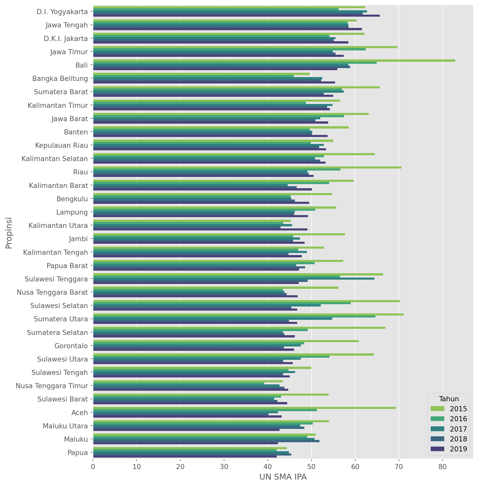
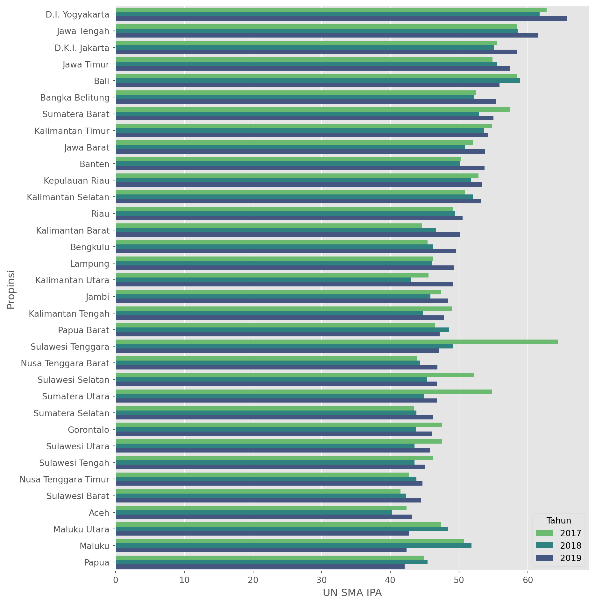

The Role of National Exam
For the longest time, national exam, like many other countries in the world is used as one of the metric to measure how well our future would be (re: children). The concept is simple, each and every children in the country will be given a set of questions/ tasks, that has to be completed for a given time, on different subjects (likely to be Math, Language, Science).
In Indonesia, this was used to be the sole metric to say if one student passed the exam or not. This has been changed ever since the newly appointed education minister of Indonesia, Nadiem Makarim (also the co-founder of SE Asia Decacorn- Gojek, Now GoTo). Nevertheless, it is interesting to see how this metric pan out over the course of 2015-2019, to see if the decentralized quality of education still persist in Java, Bali and its surrounding only. Leaving out Kalimantan, Sulawesi, Sumatra, NTT, and Papua.
Data Gathering
Webscraping using Pandas
We’re taking a look on the data from Ministry of Education (Kemendikbud), from 2019 on national exams as follows.
For this use we will need to scrape the data from the website, but the catch is–we are using just pandas library!
Enter pandas.read_html()
Code
| No. | Kode Wilayah | Nama Wilayah | Propinsi | Persentase Anggaran Pendidikan tanpa Transfer Daerah (%) | UN SMP | UN SMA IPA | UN SMA IPS | UN SMA BAHASA | UN SMK | IIUN SMP | IIUN SMA IPA | IIUN SMA IPS | IIUN SMA BAHASA | IIUN SMK | |
|---|---|---|---|---|---|---|---|---|---|---|---|---|---|---|---|
| 0 | 1 | 010000 | Prov. D.K.I. Jakarta | Prov. D.K.I. Jakarta | 18.96 | 62.17 | 67.99 | 63.75 | 0 | 51.41 | 100 | 100 | 100 | 0 | 100 |
| 1 | 2 | 010100 | Kab. Kepulauan Seribu | Prov. D.K.I. Jakarta | 0.00 | 45.26 | 0 | 0 | 0 | 0 | 100 | 0 | 0 | 0 | 0 |
| 2 | 3 | 016000 | Kota Jakarta Pusat | Prov. D.K.I. Jakarta | 0.00 | 60.97 | 69.43 | 64.01 | 0 | 55.13 | 100 | 100 | 100 | 0 | 100 |
| 3 | 4 | 016100 | Kota Jakarta Utara | Prov. D.K.I. Jakarta | 0.00 | 60.09 | 66.59 | 61.53 | 0 | 48.85 | 100 | 100 | 100 | 0 | 100 |
| 4 | 5 | 016200 | Kota Jakarta Barat | Prov. D.K.I. Jakarta | 0.00 | 60.42 | 69.31 | 63.85 | 0 | 49.65 | 100 | 100 | 100 | 0 | 100 |
Let’s see what features do we have, and which one do we really care about in this project.
Index(['No.', 'Kode Wilayah', 'Nama Wilayah', 'Propinsi',
'Persentase Anggaran Pendidikan tanpa Transfer Daerah (%)', 'UN SMP',
'UN SMA IPA', 'UN SMA IPS', 'UN SMA BAHASA', 'UN SMK', 'IIUN SMP',
'IIUN SMA IPA', 'IIUN SMA IPS', 'IIUN SMA BAHASA', 'IIUN SMK'],
dtype='object')We will leave some columns and just using region information (‘Nama Wilayah’, ‘Propinsi’), and national exams score (‘UN SMP’,‘UN SMA IPA’, ‘UN SMA IPS’)
Code
| Nama Wilayah | Propinsi | UN SMP | UN SMA IPA | UN SMA IPS | |
|---|---|---|---|---|---|
| 0 | Prov. D.K.I. Jakarta | Prov. D.K.I. Jakarta | 62.17 | 67.99 | 63.75 |
| 1 | Kab. Kepulauan Seribu | Prov. D.K.I. Jakarta | 45.26 | 0 | 0 |
| 2 | Kota Jakarta Pusat | Prov. D.K.I. Jakarta | 60.97 | 69.43 | 64.01 |
| 3 | Kota Jakarta Utara | Prov. D.K.I. Jakarta | 60.09 | 66.59 | 61.53 |
| 4 | Kota Jakarta Barat | Prov. D.K.I. Jakarta | 60.42 | 69.31 | 63.85 |
Let’s also check if the dtypes is already correct e.g. digit would be float64 or int64 dtype.
<class 'pandas.core.frame.DataFrame'>
RangeIndex: 547 entries, 0 to 546
Data columns (total 5 columns):
# Column Non-Null Count Dtype
--- ------ -------------- -----
0 Nama Wilayah 547 non-null object
1 Propinsi 547 non-null object
2 UN SMP 547 non-null object
3 UN SMA IPA 547 non-null object
4 UN SMA IPS 547 non-null object
dtypes: object(5)
memory usage: 21.5+ KBLet’s make some amendments on dtypes, to allow plotting.
Code
Nama Wilayah object
Propinsi object
UN SMP float64
UN SMA IPA float64
UN SMA IPS float64
dtype: objectJust me, but I dont like redundant information, so let’s remove some of the words in the column.
| Wilayah | Propinsi | UN SMP | UN SMA IPA | UN SMA IPS | |
|---|---|---|---|---|---|
| 0 | Prov. D.K.I. Jakarta | Prov. D.K.I. Jakarta | 62.17 | 67.99 | 63.75 |
| 1 | Kab. Kepulauan Seribu | Prov. D.K.I. Jakarta | 45.26 | 0.00 | 0.00 |
| 2 | Kota Jakarta Pusat | Prov. D.K.I. Jakarta | 60.97 | 69.43 | 64.01 |
| 3 | Kota Jakarta Utara | Prov. D.K.I. Jakarta | 60.09 | 66.59 | 61.53 |
| 4 | Kota Jakarta Barat | Prov. D.K.I. Jakarta | 60.42 | 69.31 | 63.85 |
Similarly, let’s remove ‘Prov’ from each data in ‘Propinsi’ column.
Code
| Wilayah | Propinsi | UN SMP | UN SMA IPA | UN SMA IPS | |
|---|---|---|---|---|---|
| 0 | Prov. D.K.I. Jakarta | D.K.I. Jakarta | 62.17 | 67.99 | 63.75 |
| 1 | Kab. Kepulauan Seribu | D.K.I. Jakarta | 45.26 | 0.00 | 0.00 |
| 2 | Kota Jakarta Pusat | D.K.I. Jakarta | 60.97 | 69.43 | 64.01 |
| 3 | Kota Jakarta Utara | D.K.I. Jakarta | 60.09 | 66.59 | 61.53 |
| 4 | Kota Jakarta Barat | D.K.I. Jakarta | 60.42 | 69.31 | 63.85 |
Quick DataViz…
Let’s plot senior high school (SMA) data:
Code

So, from the look of it, 2019 seems to be the year of our capital city: D.K.I. Jakarta, followed by Yogyakarta, Jawa Tengah, Timur, Bali etc. Excluding Bangka Belitung, the big five is all from Java and Bali.
Decentralized? From 2019- YES.
But of course this won’t do it justice, we need more data right?
Scrape More Data
Let’s all be human, not abusive towards our notebook, and create a function to scrape our data-change the dtypes-change the column name etc.
Code
def webscrap(tahun):
df = pd.read_html(f'https://npd.kemdikbud.go.id/?appid=hasilun&tahun={tahun}')[1][0:547] #ambil data dari web
df = df[['Nama Wilayah', 'Propinsi', 'UN SMP','UN SMA IPA', 'UN SMA IPS']] #extract kolom
df = df.astype({'UN SMP': float, 'UN SMA IPA': float, 'UN SMA IPS': float}) #ubah dtypes
df = df.rename(columns={'Nama Wilayah': 'Wilayah'}) #rename kolom 'Nama Wilayah' jadi 'Wilayah'
df['Propinsi'] = df['Propinsi'].str.replace('Prov. ', '', regex=False) #menghapus 'Prov.'
df['Tahun'] = tahun #menambahkan kolom tahun
return dfThen let’s scrap all years data from 2015-2019.
Let’s do quick sanity check:
| Wilayah | Propinsi | UN SMP | UN SMA IPA | UN SMA IPS | Tahun | |
|---|---|---|---|---|---|---|
| 0 | Prov. D.K.I. Jakarta | D.K.I. Jakarta | 73.96 | 72.99 | 66.05 | 2015 |
| 1 | Kab. Kepulauan Seribu | D.K.I. Jakarta | 62.80 | 0.00 | 0.00 | 2015 |
| 2 | Kota Jakarta Pusat | D.K.I. Jakarta | 74.02 | 72.82 | 63.99 | 2015 |
| 3 | Kota Jakarta Utara | D.K.I. Jakarta | 71.22 | 69.54 | 63.31 | 2015 |
| 4 | Kota Jakarta Barat | D.K.I. Jakarta | 71.86 | 71.79 | 63.71 | 2015 |
| Wilayah | Propinsi | UN SMP | UN SMA IPA | UN SMA IPS | Tahun | |
|---|---|---|---|---|---|---|
| 0 | Prov. D.K.I. Jakarta | D.K.I. Jakarta | 62.17 | 67.99 | 63.75 | 2019 |
| 1 | Kab. Kepulauan Seribu | D.K.I. Jakarta | 45.26 | 0.00 | 0.00 | 2019 |
| 2 | Kota Jakarta Pusat | D.K.I. Jakarta | 60.97 | 69.43 | 64.01 | 2019 |
| 3 | Kota Jakarta Utara | D.K.I. Jakarta | 60.09 | 66.59 | 61.53 | 2019 |
| 4 | Kota Jakarta Barat | D.K.I. Jakarta | 60.42 | 69.31 | 63.85 | 2019 |
Even better, let’s combine all of the data into one big data:
Code
2015 547
2016 547
2017 547
2018 547
2019 547
Name: Tahun, dtype: int64Data looks good, but just to be safe, let’s save it before we do anything stupid.
More DataViz…
Let’s see which 10 regions have the highest mean national exams.
Code
| Propinsi | UN SMA IPA | |
|---|---|---|
| 0 | D.I. Yogyakarta | 65.650000 |
| 1 | Jawa Tengah | 61.510000 |
| 2 | D.K.I. Jakarta | 58.410000 |
| 3 | Jawa Timur | 57.377949 |
| 4 | Bali | 55.901000 |
| 5 | Bangka Belitung | 55.407500 |
| 6 | Sumatera Barat | 54.978500 |
| 7 | Kalimantan Timur | 54.211818 |
| 8 | Jawa Barat | 53.813929 |
| 9 | Banten | 53.695556 |
Let’s do some plotting for all years.
Code

From the above figure, it looks like the Bali, D.I. Yogyakarta, similar to 2019 dataset is indeed appearing at the top-5.
But, let’s exclude year 2015 and 2016, as I think it is a bit an outlier in terms of value here.
Code

Just by looking at it, the big-five are from Java and Bali. Not until we reach rank 6 and below we see Bangka Belitung, Sumatera, and Kalimantan. Region outside Java and Bali.
Now let’s see if our thinking is right, by getting a top region on each national exams from junior to senior high schools.
Code
def get_max_prop(df):
max_un_smp = df.groupby(['Propinsi'])['UN SMP'].mean().nlargest(1).index[0]
max_un_sma_ipa = df.groupby(['Propinsi'])['UN SMA IPA'].mean().nlargest(1).index[0]
max_un_sma_ips = df.groupby(['Propinsi'])['UN SMA IPS'].mean().nlargest(1).index[0]
return [max_un_smp, max_un_sma_ipa, max_un_sma_ips]Let’s do a loop over years;
Code
['D.K.I. Jakarta', 'Bali', 'Bali']
['D.I. Yogyakarta', 'Bali', 'Sumatera Utara']
['D.I. Yogyakarta', 'Sulawesi Tenggara', 'D.I. Yogyakarta']
['D.I. Yogyakarta', 'D.I. Yogyakarta', 'D.I. Yogyakarta']
['D.I. Yogyakarta', 'D.I. Yogyakarta', 'D.I. Yogyakarta']From the above result, it was clear that excluding Sulawesi Tenggara, all of provinces here is coming from Java and Bali. Most notably D.I. Yogyakarta, D.K.I. Jakarta and Bali.
Let’s Talk about Kalimantan Timur
Why? Cause I was raised in Tenggarong, Kutai Kartanegara region, Kalimantan Timur Province. I spent my senior high school here, so I have my own thinking here.
My theory is even if Kalimantan Timur was up there at rank 8, it was not from Tenggarong.
Code
| Wilayah | Propinsi | UN SMP | UN SMA IPA | UN SMA IPS | Tahun | |
|---|---|---|---|---|---|---|
| 0 | Kab. Kutai Barat | Kalimantan Timur | 67.48 | 67.03 | 66.30 | 2015 |
| 1 | Kota Bontang | Kalimantan Timur | 61.46 | 66.26 | 58.32 | 2019 |
| 2 | Kota Bontang | Kalimantan Timur | 57.47 | 63.93 | 61.97 | 2017 |
| 3 | Kota Bontang | Kalimantan Timur | 58.06 | 63.40 | 58.75 | 2018 |
| 4 | Kab. Kutai Kartanegara | Kalimantan Timur | 55.74 | 62.27 | 61.03 | 2015 |
| 5 | Kota Balikpapan | Kalimantan Timur | 59.49 | 61.71 | 53.79 | 2019 |
| 6 | Kota Balikpapan | Kalimantan Timur | 57.87 | 61.30 | 51.25 | 2015 |
| 7 | Kota Bontang | Kalimantan Timur | 60.51 | 61.16 | 56.19 | 2016 |
| 8 | Kota Balikpapan | Kalimantan Timur | 55.50 | 60.94 | 53.81 | 2017 |
| 9 | Kota Balikpapan | Kalimantan Timur | 56.65 | 60.51 | 51.45 | 2018 |
Welp, no surprise there, I was right. My hometown (Kab. Kutai Kartanegara) did a good one in 2015, but that was it. The rest is Bontang, Balikpapan. Bontang, has a big industry from Pupuk Kaltim (PKT), and Balikpapan is a big Oil City with Airport, etc.
What do We Get?
I think it was clear now that education still very much an exclusive trait, owned by province, and place where there is an industry like Pupuk Kaltim Bontang, and Oil companies in Balikpapan. Places where not so much happening like Tenggarong, is very much stay behind the rest of Kalimantan Timur, and further behind the rest of the big cities in Java and Bali.
With the exclusion of National Exams as the only metric for student passing the bar, I wonder how could we as a nation measure the level of education on every province of Indonesia. For that, I wish my country the best - TIme will tell..I guess.
Citation
@online{arie wijaya2023,
author = {Arie Wijaya, Aditya},
title = {Webscraping {National} {Exams} of {Indonesia}},
date = {2023-01-31},
url = {https://adtarie.net/posts/004-national-exam},
langid = {en}
}